Based on Paul Hudson's approach to working with AI coding agents
If you have never used an AI coding agent before, this guide will walk you through the essentials: how to work with them efficiently, how to connect them to Xcode, and how to avoid the most common mistakes. No prior experience with AI tools is required.
1. Start small, always
The single most important habit: ask the AI to build one feature at a time.
If you ask for too much at once, the agent will start reiterating on its own errors, trying fix after fix, and burning a lot of tokens in the process. It is slow, expensive, and messy. One small, well-defined request at a time is faster and more reliable.
2. Running multiple agents at once
You can run more than one AI conversation at the same time, but be careful: if two agents touch the same code, they will overlap and create a mess.
The safe way is to assign each agent a different layer of work:
- Agent 1: modifies the code and adds a new feature
- Agent 2: adds code comments
- Agent 3: writes documentation (for example, an
.mdfile)
A practical tip: open one terminal window with multiple tabs, and rename each tab after its agent. That way you never lose track of who is doing what.
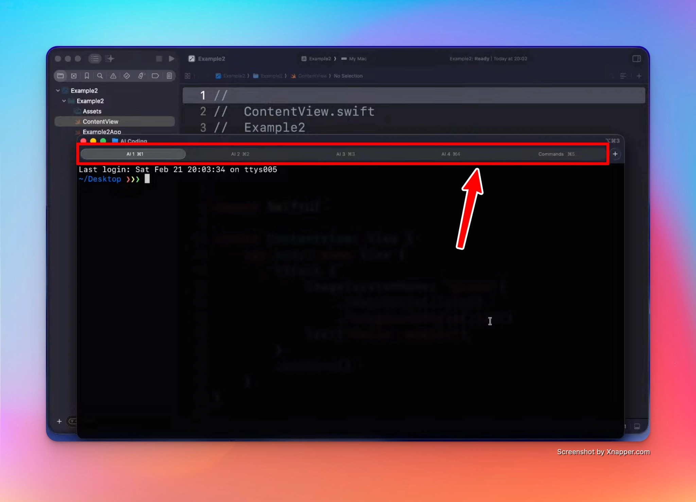
3. Git is your time machine
If your project uses Git, you can always go back and restore a previous version of the project, no matter what the agent did. This is your safety net. Commit often, especially before letting an agent make big changes.
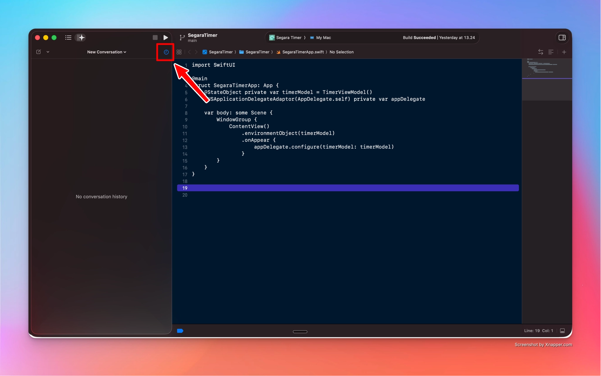
4. Understanding the context window
An AI agent has a limited "working memory" called the context window. Everything you say, every file it reads, and every error it sees takes up space in it.
Two useful commands inside Claude Code:
/context— shows how many tokens you are using and where they go (system prompt, tools, messages, and so on). One interesting item is the autocompact buffer: when the agent runs out of memory, it decides which information to preserve and rearranges it automatically./compact— lets you compact the conversation manually, and you can add custom instructions about what to keep. Very useful when a project gets big.
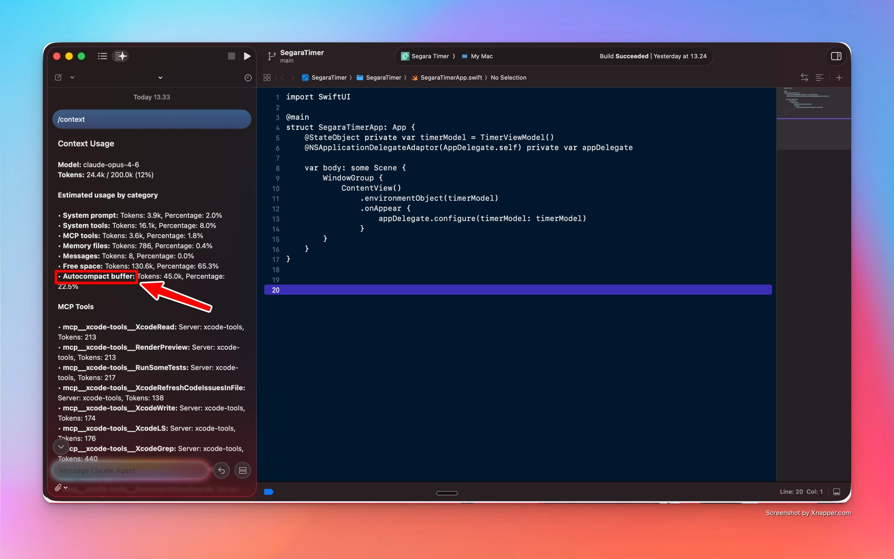
Context pollution
When the context window fills up with past attempts and past errors, the model gets measurably worse. Think of a person working for hours without a break: still active, but no longer sharp. This is called context pollution, and it is the reason why fresh sessions with clean context often outperform one long session.
5. Why use AI agents directly inside Xcode
Apple provides a system prompt to agents running inside Xcode, giving them up-to-date information about new Swift features. If you use a standalone app instead, you may need to manually provide information about recent APIs (for example, Liquid Glass), because models are often trained on older data.
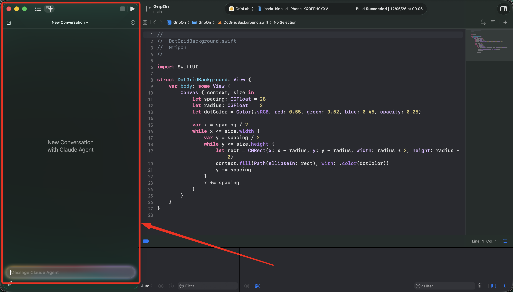
The downside: all that extra information is attached to your requests under the hood, and it costs tokens. Researchers who intercepted Xcode's traffic found that on top of Claude Code's own system prompt, Xcode adds Apple-specific instructions, the full definitions of about 20 Xcode tools, and, on every single prompt, your entire project structure. In one documented test, a one-word "hello" carried a project listing thousands of tokens long.
Two things soften this. Apple has optimized token usage for these integrations, and prompt caching makes the repeated static parts (system prompt, tool definitions) much cheaper after the first request. But the richer context still means each conversation consumes more credits than a bare prompt would, especially in large projects. You can see it yourself: run /context inside Xcode and check how many tokens the system prompt and tools occupy before you have typed anything.
If you are interested in the research about this, check: extracting-xcodes-claude-code-prompt
6. Connecting Claude CLI to Xcode (MCP)
You can connect third-party editors and CLIs to Xcode through MCP servers (Model Context Protocol). This gives Claude CLI access to all of Xcode's functionality: building, running tests, reading build logs, and more.
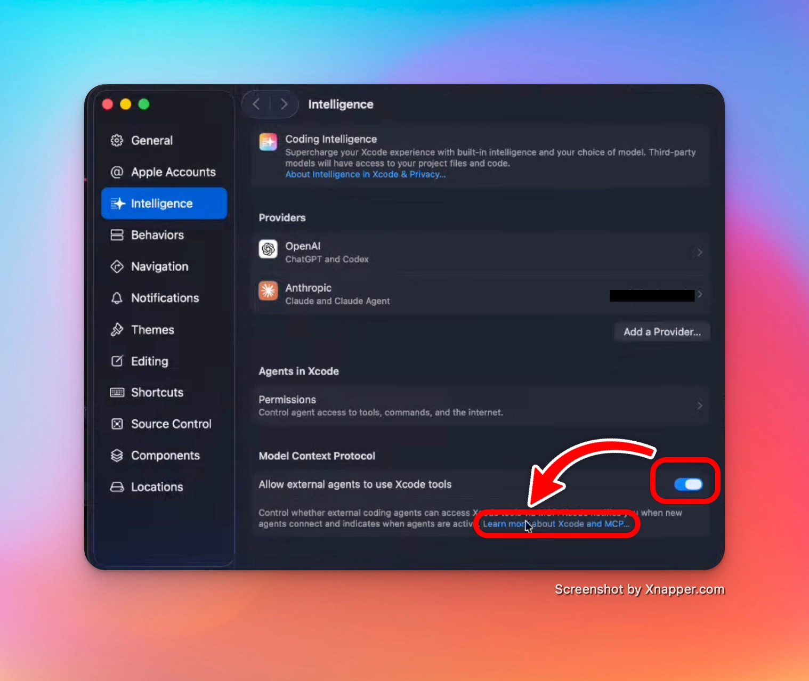
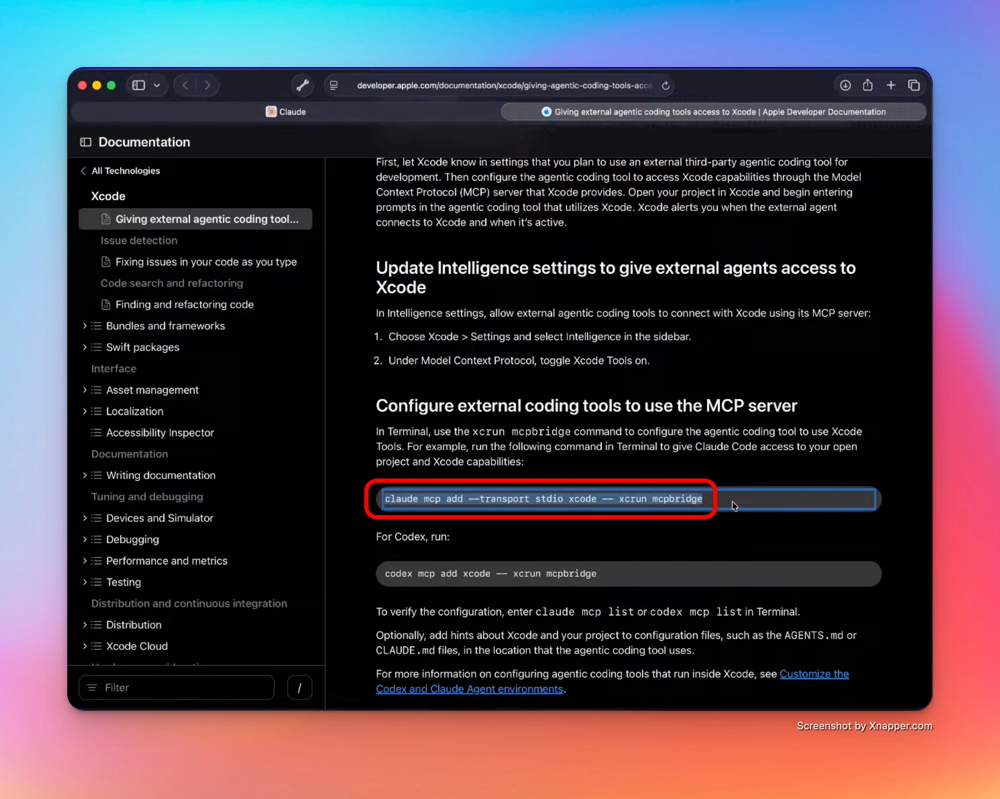
Setup:
- In Xcode, go to Settings > Intelligence
- Under Model Context Protocol, toggle on Allow external agents to use Xcode tools
- Copy the command from Apple's documentation and run it in the terminal:
claude mcp add --transport stdio xcode -- xcrun mcpbridge- Wait for Claude to ask you to restart
Once connected, ask Claude: "What Xcode MCP tools do you have?" It will list everything it can do: build the project, run tests, read and search files, get filtered build logs, and more.
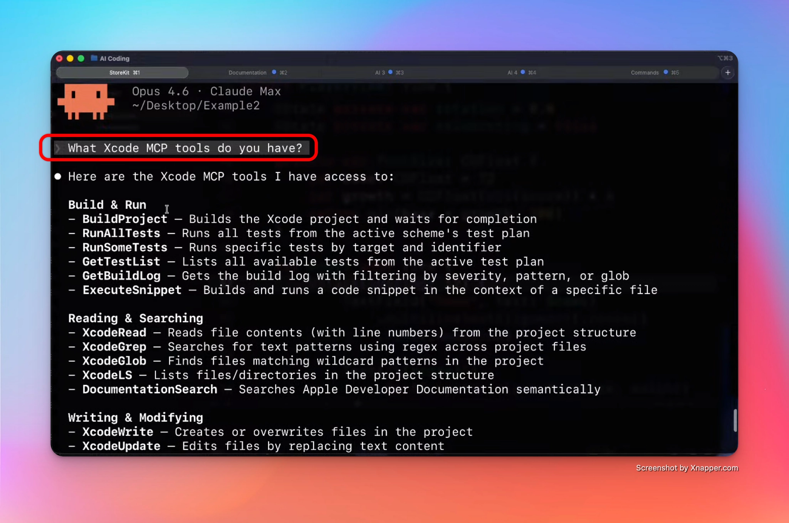
A nice trick: you can ask it to render a preview of a view as a snapshot image, and it will save the file directly in the working directory.
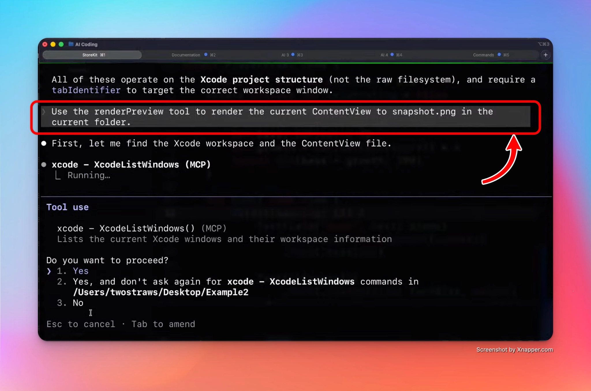
7. Managing permissions
Inside Claude CLI, use /permissions to define what Claude is allowed to do in the terminal without asking every time. Permission rules are tool names, optionally with a specifier, for example Bash(ls:*).
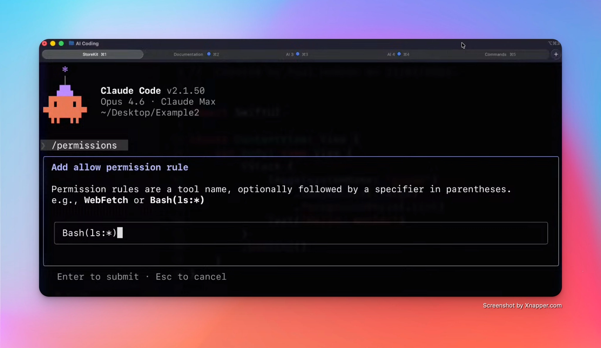
8. Two prompts worth stealing
Before you build. Instead of describing your app and hoping for the best, flip the conversation:
"Ask me a comprehensive set of questions to help design it."
Claude will interview you, and you will discover what you actually want to build.
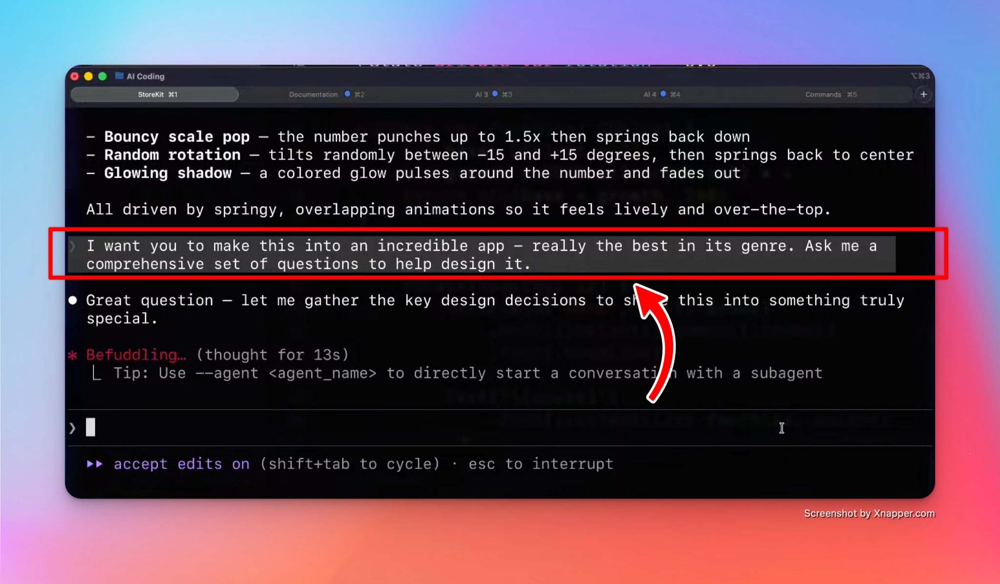
Before App Review. During the App Review process, Apple may ask you about your code choices, and you need to answer properly. To prepare:
"Grill me about the code base to check if I understand it."
If an AI wrote part of your code, this is how you make sure you still own it.
9. The Ralph Wiggum methodology
This one is more advanced, but worth knowing.
Around May 2025, developer Geoffrey Huntley identified a bottleneck in agentic coding: the human. Models were capable, but they had to stop and wait for a person to review and re-prompt after every error.
His idea, named after Ralph Wiggum from The Simpsons, is a loop: pipe the model's entire output (failures, stack traces, hallucinations included) back into its own input, over and over, until the task is done. A "contextual pressure cooker": press the model against its own failures long enough, and it will eventually find a correct solution just to escape the loop.
The result is a shift from "Waterfall" planning to something closer to true Agile for AI: instead of following a brittle multi-step plan, the agent grabs a ticket, finishes it, and looks for the next one.
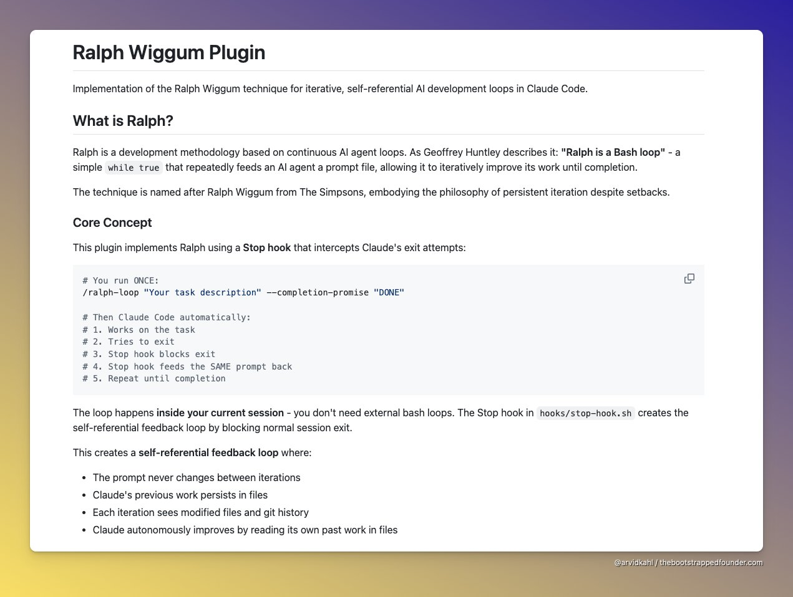
Plugin vs bash script
There are two ways to run Ralph:
- Claude Plugin: install it inside Claude Code via
/plugin, typingralph. It works within a single session, using a Stop hook that blocks Claude from exiting and feeds the same prompt back until completion. - Bash script: exits and restarts the session on every iteration.
The bash script has one big advantage: because every iteration starts fresh, it solves the context pollution problem described earlier. This is why Paul Hudson prefers it.
10. Documentation and AI
Some websites let you access an .md version of any documentation page, which is perfect for feeding to an LLM. For example, eToro's API docs: add .md to the end of a page URL and you get a clean markdown version.
Apple does not offer this yet. Information about new Swift features reaches the models through the system prompts Apple provides inside Xcode (see section 5).
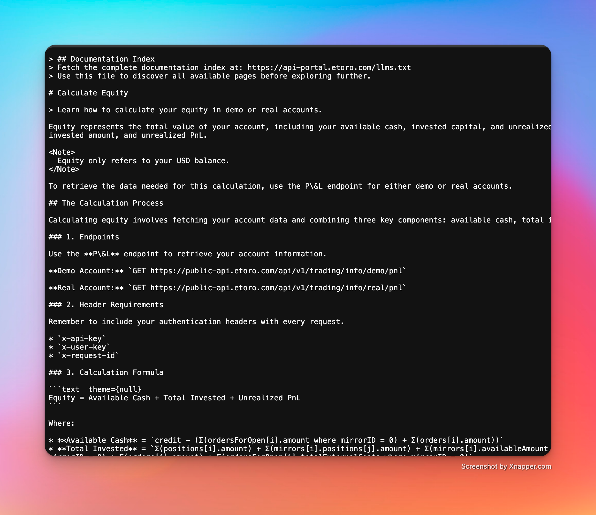
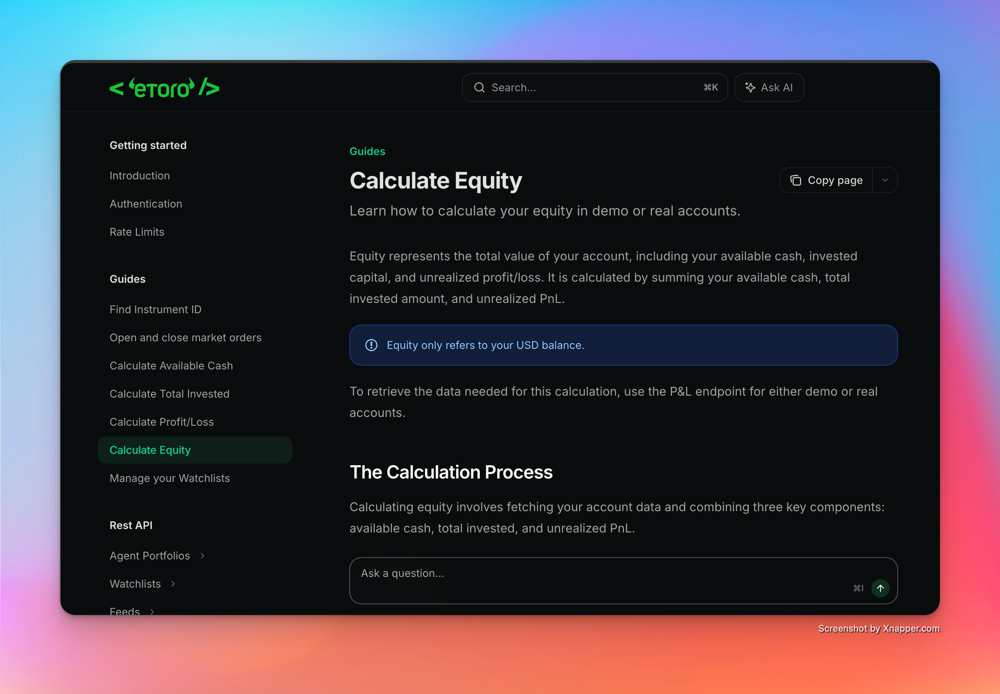
11. Using a refined CLAUDE.md file
Every time Claude starts in a new directory, it creates a CLAUDE.md file: the system prompt used for every request in that project.
Paul Hudson maintains a Swift-refined version of this file, available at: github.com/twostraws/SwiftAgents
The fastest way to use it: copy his file over the default one.
Automating it with a bash function
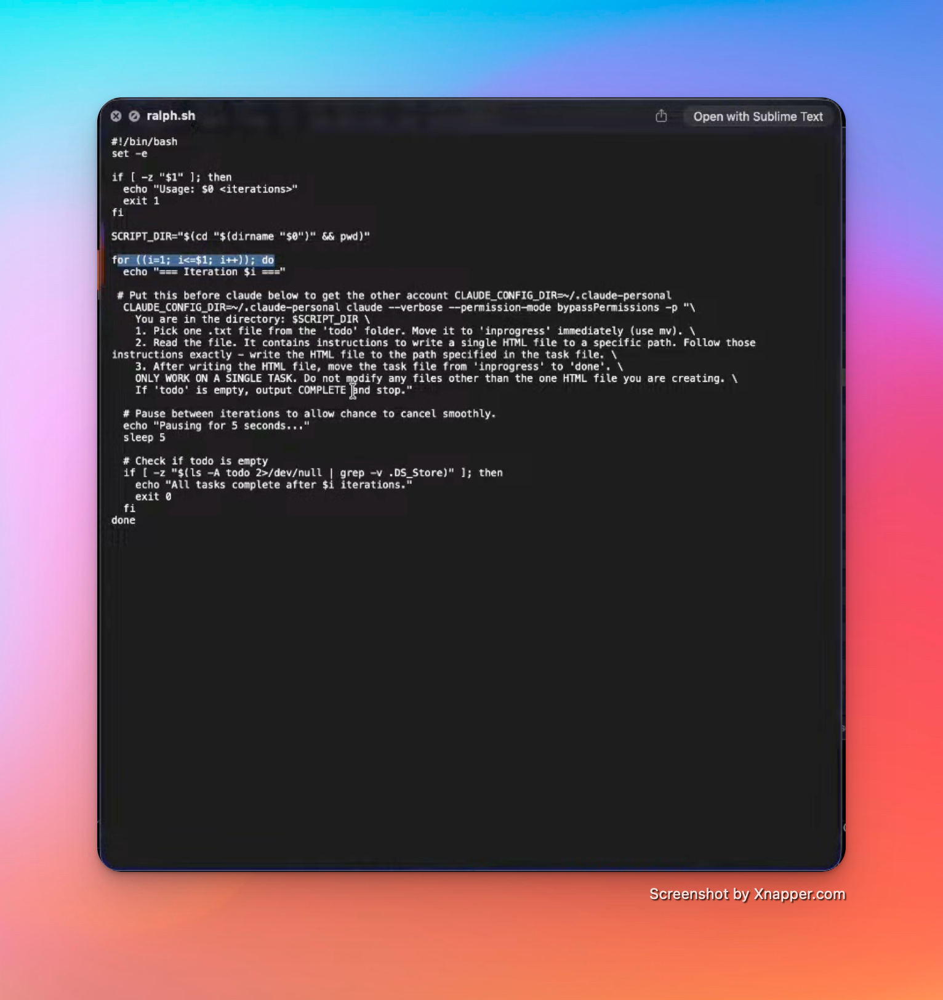
You can create a terminal function that copies the file into any project before launching Claude. Add this to your .zshrc:
# Functions (remember to use source ~/.zshrc to reload when adding new functions)
swiftagent() {
local source="/path/to/your/AgentsMDs/CLAUDE.md"
if [ ! -f "$source" ]; then
echo "❌ Source file not found"
return 1
fi
if cp -i "$source" ./CLAUDE.md; then
echo "✅ CLAUDE.md copied to $(pwd)"
else
echo "❌ Copy failed"
return 1
fi
}Reload the terminal session:
source ~/.zshrcThen, in any project folder, just run:
swiftagent12. Claude Skills
Skills are custom agents designed to carry out specific tasks. Two open repositories are worth exploring, with best-practice instructions for coding in Swift:
- Paul Hudson: github.com/twostraws/Swift-Agent-Skills
- Antoine van der Lee: SwiftUI-AgentSkill
Quick reference
| Command | What it does |
|---|---|
CMD + 0 |
Hide the AI panel in Xcode |
/context |
Show token usage per category |
/compact |
Compact the context, with optional custom instructions |
/permissions |
Define what Claude can run in the terminal |
/plugin |
Install plugins (for example, Ralph) |
Key takeaways
- One feature at a time, always
- Multiple agents are fine, but keep them on separate layers
- Commit often: Git is your undo button
- A polluted context makes the model dumber, so compact or restart
- Use Claude inside Xcode (or connected via MCP) for up-to-date Swift knowledge
- Let Claude interview you before building, and grill you after